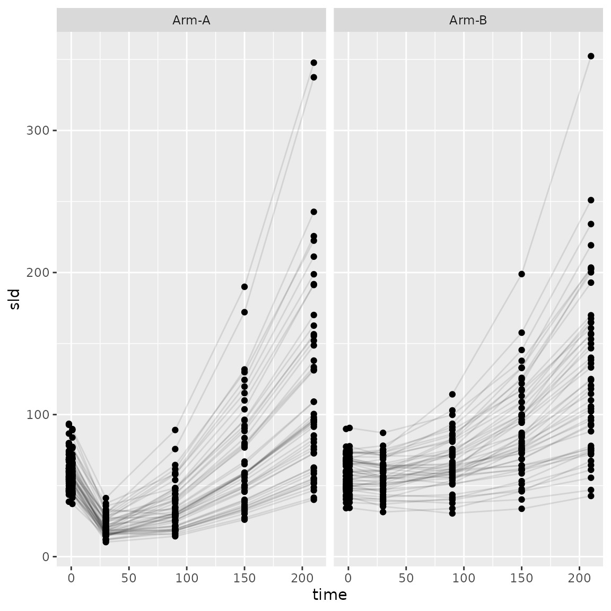
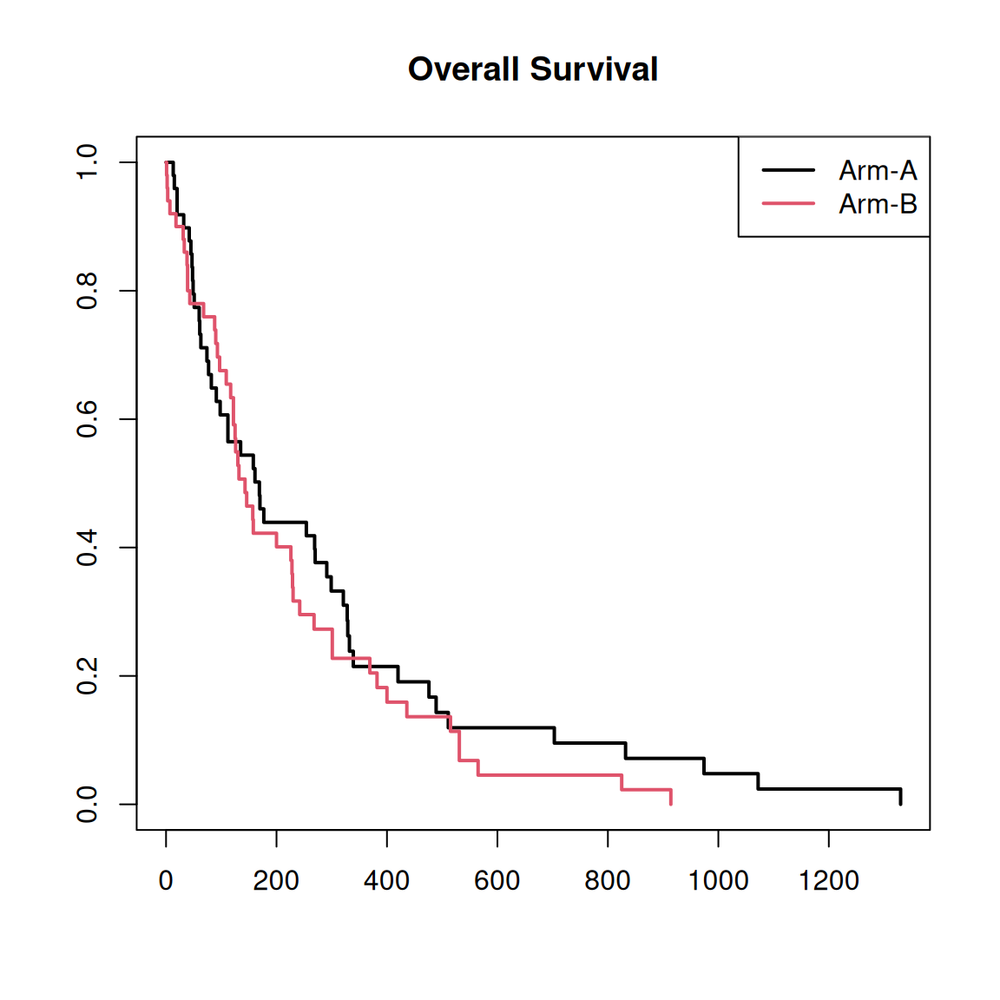
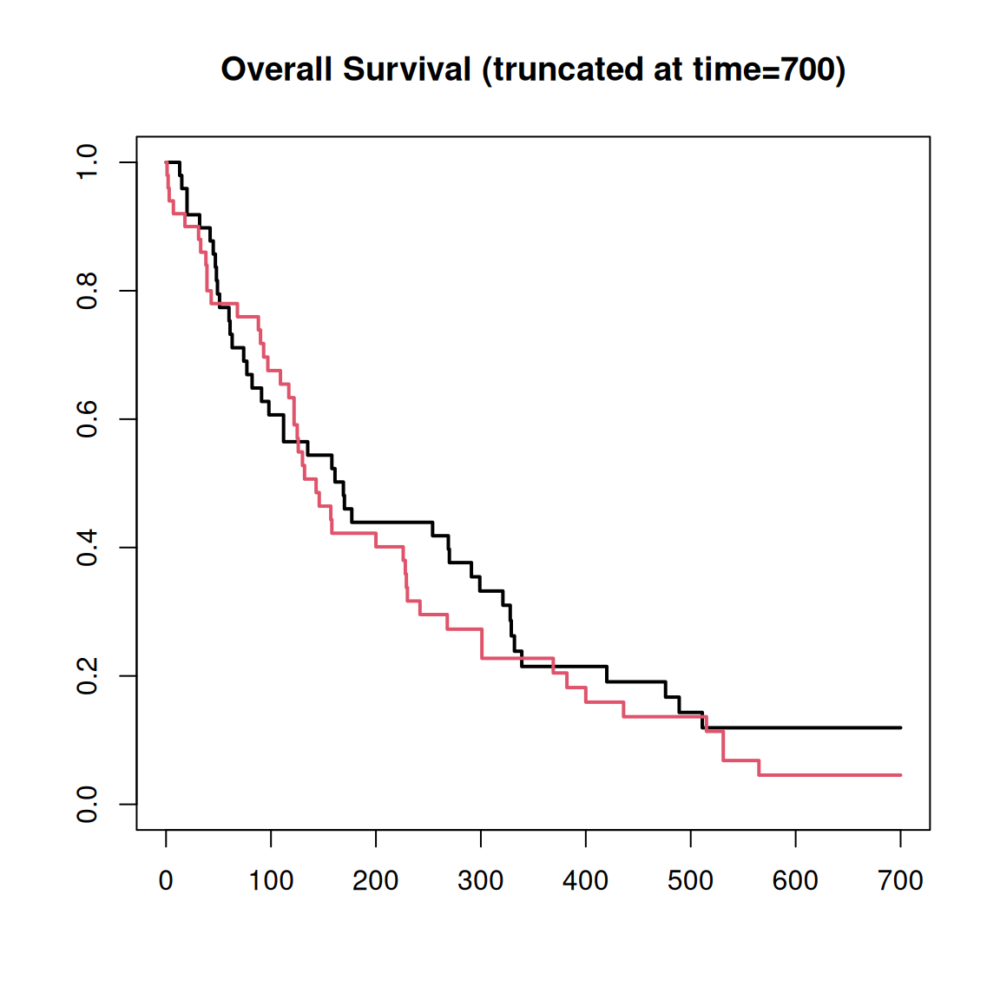
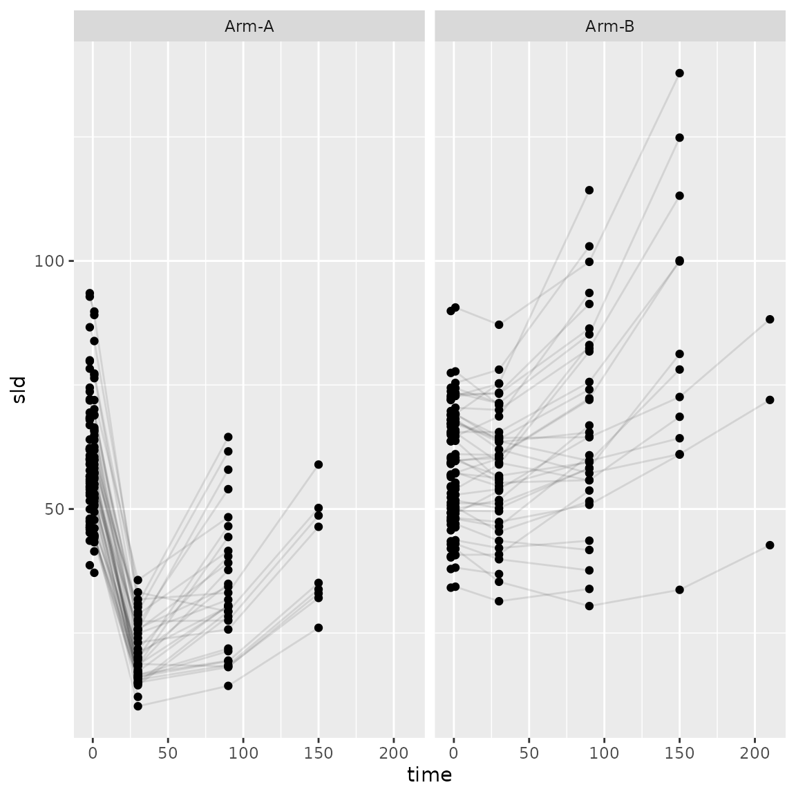
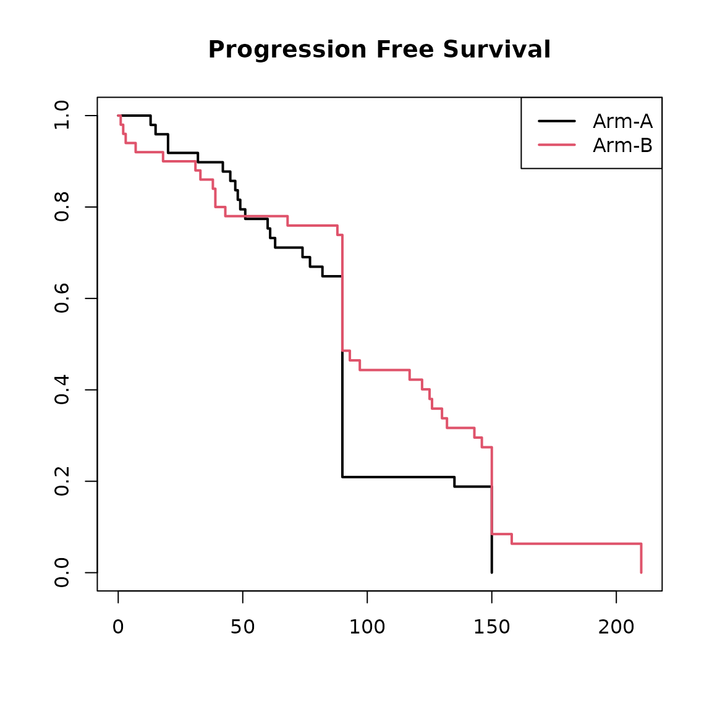
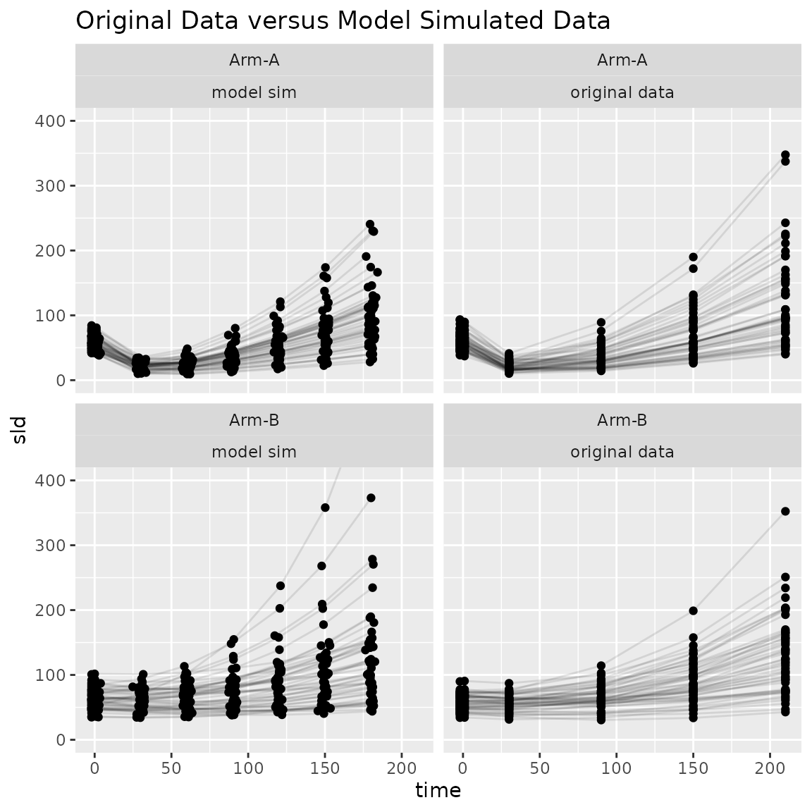
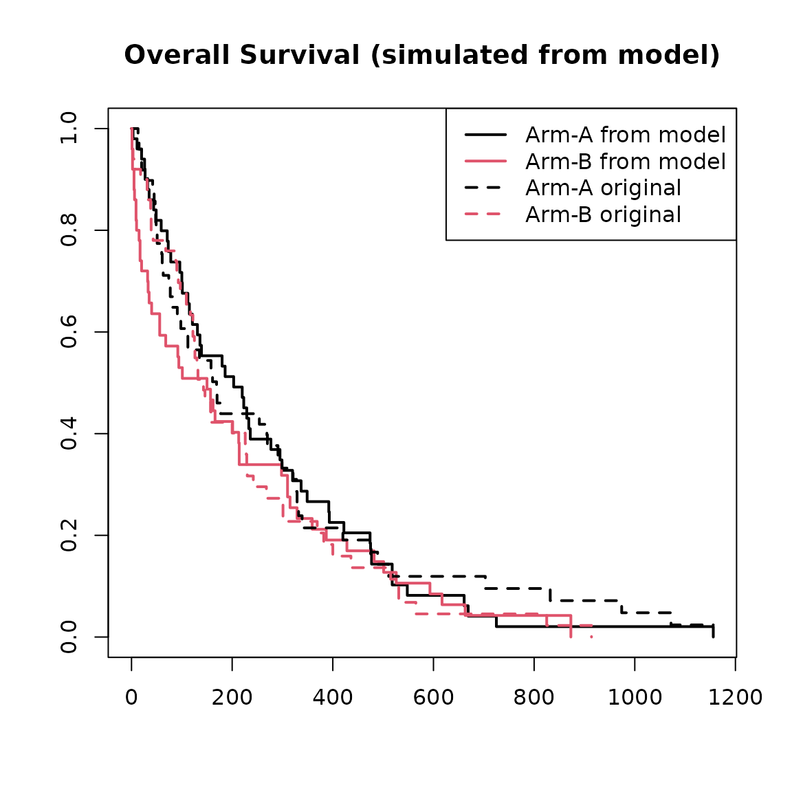

library(jmpost)
#> Registered S3 methods overwritten by 'ggpp':
#> method from
#> heightDetails.titleGrob ggplot2
#> widthDetails.titleGrob ggplot2
#> CmdStan path set to: /root/.cmdstan/cmdstan-2.39.0The jmpost package includes data simulation
functionality for the included joint models. The data simulation is
based on specifying the longitudinal model and the survival model
including link parameters.
Example
set.seed(129)
sim_data <- SimJointData(
design = list(
SimGroup(50, "Arm-A", "Study-X"),
SimGroup(50, "Arm-B", "Study-X")
),
longitudinal = SimLongitudinalSteinFojo(
times = c(-2, 1, 30, 90, 150, 210),
mu_g = log(c(0.005, 0.005)),
mu_s = log(c(0.06, 0.007)),
omega_g = 0.3,
link_dsld = 0.1,
),
survival = SimSurvivalWeibullPH(
lambda = 1 / 300,
gamma = 0.97,
time_max = 2000,
time_step = 1,
lambda_cen = 1 / 9000,
beta_cat = c(
"A" = 0,
"B" = -0.1,
"C" = 0.5
),
beta_cont = 0.3
)
)This object has survival and longitudinal
components.
head(sim_data@survival)
#> # A tibble: 6 × 7
#> subject study arm time cov_cont cov_cat event
#> <chr> <fct> <fct> <dbl> <dbl> <fct> <dbl>
#> 1 subject_001 Study-X Arm-A 42 -1.12 B 1
#> 2 subject_002 Study-X Arm-A 20 -0.990 C 1
#> 3 subject_003 Study-X Arm-A 832 -1.37 C 1
#> 4 subject_004 Study-X Arm-A 112 -1.36 C 1
#> 5 subject_005 Study-X Arm-A 13 2.00 B 1
#> 6 subject_006 Study-X Arm-A 135 0.696 B 1
head(sim_data@longitudinal)
#> # A tibble: 6 × 6
#> subject arm study time sld observed
#> <chr> <fct> <fct> <dbl> <dbl> <lgl>
#> 1 subject_001 Arm-A Study-X -2 64.0 TRUE
#> 2 subject_001 Arm-A Study-X 1 61.9 TRUE
#> 3 subject_001 Arm-A Study-X 30 27.7 TRUE
#> 4 subject_001 Arm-A Study-X 90 58.9 FALSE
#> 5 subject_001 Arm-A Study-X 150 124. FALSE
#> 6 subject_001 Arm-A Study-X 210 226. FALSEWe can see the trajectory of the tumour size.
library(ggplot2)
ggplot(
sim_data@longitudinal,
aes(x = time, y = sld, group = subject)
) +
geom_line(alpha = 0.1) +
geom_point() +
facet_wrap(~arm)
We can also visualise the Kaplan-Meier survival curves.
library(survival)
plot(
survfit(Surv(time, event) ~ arm, data = sim_data@survival),
col = 1:2,
lwd = 2,
main = "Overall Survival"
)
legend("topright", col = 1:2, lwd = 2, legend = c("Arm-A", "Arm-B"))
Administrative Cut Off
We may wish to have a fixed maximum study duration and remove any simulated values after that time. This can be specified as a single fixed value or as a vector if we additionally wish to consider enrolment time.
sim_data_end <- cut_data(sim_data, 700)
plot(
survfit(Surv(time, event) ~ arm, data = sim_data_end@survival),
col = 1:2,
lwd = 2,
main = "Overall Survival (truncated at time=700)"
)
Progression
We might also be interested in time to progression defined as an increase in tumour size over a threshold. The threshold is based on the minimum observed SLD up to the given time and the relative and absolute growth. For example we might require the SLD to increase at least 20% and at least 5mm. We don’t include any observations before time 0 in the calculation of the minimum and we don’t observe any SLD values after progression.
sim_data_pd <- add_pfs(
sim_data_end,
relative_threshold = 1.2,
absolute_threshold = 5,
from_time = 0,
observed_after = FALSE
)Let’s look at the plots again up to progression.
ggplot(
sim_data_pd@longitudinal |> dplyr::filter(observed), # here we only include observed values
aes(x = time, y = sld, group = subject)
) +
geom_line(alpha = 0.1) +
geom_point() +
facet_wrap(~arm)
plot(
survfit(Surv(pfs_time, pfs_event) ~ arm, data = sim_data_pd@survival),
col = 1:2,
lwd = 2,
main = "Progression Free Survival"
)
legend("topright", col = 1:2, lwd = 2, legend = c("Arm-A", "Arm-B"))
Model Fitting from Simulated Data
As already descried in the quick start vignette, we can use this data to fit a joint model.
os_data <- sim_data_end@survival
long_data <- sim_data_end@longitudinal
joint_data <- DataJoint(
subject = DataSubject(
data = os_data,
subject = "subject",
arm = "arm",
study = "study"
),
survival = DataSurvival(
data = os_data,
formula = Surv(time, event) ~ cov_cat + cov_cont
),
longitudinal = DataLongitudinal(
data = long_data,
formula = sld ~ time,
threshold = 5
)
)
sf_model <- JointModel(
longitudinal = LongitudinalSteinFojo(
mu_bsld = prior_normal(log(60), 0.2),
mu_ks = prior_normal(-3, 0.4),
mu_kg = prior_normal(log(0.005), 0.3),
centred = TRUE
),
survival = SurvivalWeibullPH(),
link = linkDSLD()
)
set.seed(202671)
mcmc_results <- sampleStanModel(
sf_model,
data = joint_data,
iter_sampling = 1000,
iter_warmup = 500,
chains = 4,
parallel_chains = 4,
step_size = 0.01
)
knitr::kable(
mcmc_results@results$summary(
c("lm_sf_mu_bsld", "lm_sf_mu_ks", "lm_sf_mu_kg", "lm_sf_omega_bsld", "lm_sf_omega_ks", "lm_sf_omega_ks")
),
digits = 3
)| variable | mean | median | sd | mad | q5 | q95 | rhat | ess_bulk | ess_tail |
|---|---|---|---|---|---|---|---|---|---|
| lm_sf_mu_bsld[1] | 4.079 | 4.078 | 0.021 | 0.021 | 4.045 | 4.113 | 1.010 | 499.031 | 874.038 |
| lm_sf_mu_ks[1] | -2.864 | -2.864 | 0.027 | 0.026 | -2.908 | -2.821 | 1.001 | 655.016 | 1062.161 |
| lm_sf_mu_ks[2] | -4.975 | -4.975 | 0.029 | 0.029 | -5.022 | -4.928 | 1.010 | 707.218 | 1134.503 |
| lm_sf_mu_kg[1] | -5.372 | -5.374 | 0.046 | 0.045 | -5.447 | -5.297 | 1.008 | 437.717 | 704.556 |
| lm_sf_mu_kg[2] | -5.336 | -5.337 | 0.043 | 0.043 | -5.405 | -5.264 | 1.005 | 388.108 | 430.017 |
| lm_sf_omega_bsld[1] | 0.207 | 0.207 | 0.014 | 0.014 | 0.185 | 0.231 | 1.004 | 642.744 | 1055.525 |
| lm_sf_omega_ks[1] | 0.185 | 0.183 | 0.019 | 0.018 | 0.157 | 0.217 | 1.011 | 478.458 | 776.004 |
| lm_sf_omega_ks[2] | 0.211 | 0.209 | 0.022 | 0.021 | 0.179 | 0.249 | 1.014 | 487.256 | 875.852 |
Simulating from a Fitted Model
The package also have the functionality to generate new data based on the fitted model. We use the [simulate.JointModelSamples] function.
?simulate.JointModelSamples
set.seed(198802)
new_model_data <- simulate(
mcmc_results,
times = c(-2, 1, 30, 60, 90, 120, 150, 180),
jitter_var = c(0, 2)
)For this simulation we set
- the times we wish to have longitudinal observations
- variance for jitter around those observation times
- time_max and time_step for numerical integration
- lambda parameter for exponential censoring times
- scaled_variance which should be set to the same as the fitted model. This is described more in the statistical specifications vignette.
Now we can inspect the new simulated data.
head(new_model_data@longitudinal)
#> subject arm study time sld observed
#> 1 subject_001 Arm-A Study-X -2.000000 52.45178 TRUE
#> 2 subject_001 Arm-A Study-X 1.092538 50.42547 TRUE
#> 3 subject_001 Arm-A Study-X 31.020617 18.29569 TRUE
#> 4 subject_001 Arm-A Study-X 60.795321 14.45488 TRUE
#> 5 subject_001 Arm-A Study-X 91.002436 18.35262 TRUE
#> 6 subject_001 Arm-A Study-X 120.535991 24.59377 TRUE
head(new_model_data@survival)
#> # A tibble: 6 × 7
#> subject study arm time event cov_cat cov_cont
#> <fct> <fct> <fct> <dbl> <dbl> <fct> <dbl>
#> 1 subject_001 Study-X Arm-A 422 1 B -1.12
#> 2 subject_002 Study-X Arm-A 186 1 C -0.990
#> 3 subject_003 Study-X Arm-A 136 1 C -1.37
#> 4 subject_004 Study-X Arm-A 477 1 C -1.36
#> 5 subject_005 Study-X Arm-A 20 1 B 2.00
#> 6 subject_006 Study-X Arm-A 180 1 B 0.696
ggplot(
dplyr::bind_rows(
"model sim" = new_model_data@longitudinal,
"original data" = sim_data@longitudinal,
.id = "sim"
),
aes(x = time, y = sld, group = subject)
) +
geom_line(alpha = 0.1) +
geom_point() +
facet_wrap(~ arm + sim) +
coord_cartesian(ylim = c(0, 400)) +
ggtitle("Original Data versus Model Simulated Data")
plot(
survfit(Surv(time, event) ~ arm, data = new_model_data@survival),
col = 1:2,
lwd = 2,
main = "Overall Survival (simulated from model)"
)
lines(
survfit(Surv(time, event) ~ arm, data = sim_data@survival),
col = 1:2,
lwd = 2,
lty = 2
)
legend("topright",
col = c(1, 2, 1, 2), lwd = 2, lty = c(1, 1, 2, 2),
legend = c("Arm-A from model", "Arm-B from model", "Arm-A original", "Arm-B original")
)